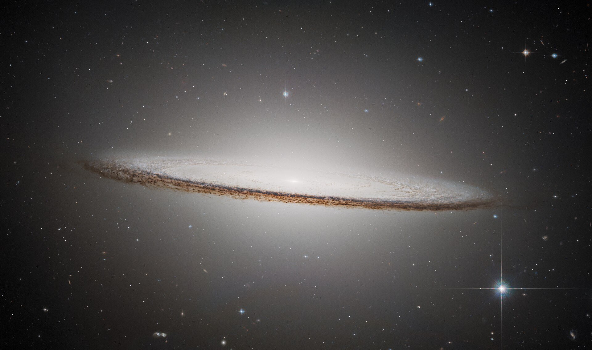

Sombrerogalaxen är en spiralgalax som ligger 31,1 ljusår från oss och den är cirka 95 000 ljusår i diameter. Galaxen upptäcktes av den franska astronomen Pierre Méchain den 11 maj 1781. Dess ljusa konvexa centrum och mörka platta utsida ger den formen av en sombrero. Under 1990 visade sig det finnas ett supermassivt svart hål i mitten av sombrerogalaxen eftersom dess storlek inte kunde bevaras utan ett objekt som var 1 miljarder gånger så stor som solen.